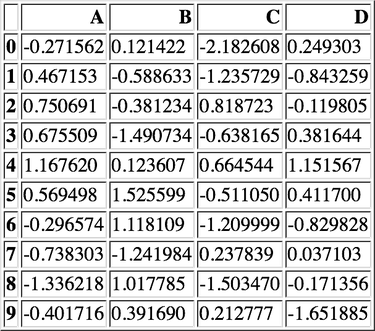
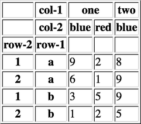
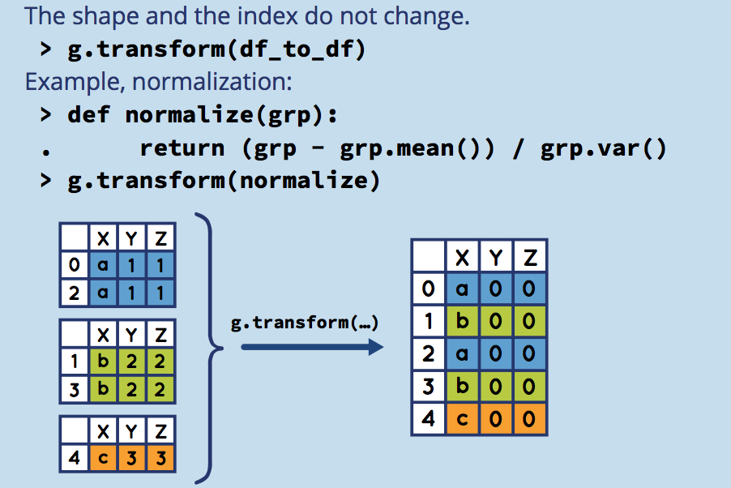

Pandas
Table of Contents
- 1. 核心数据结构
- 2. 函数应用
- 3. 索引
- 4. 分组与聚合
- 5. 处理丢失数据
- 6. 时间序列
- 7. 可视化
- 8. 导入导出
- 9. 示例工程
Table of Contents
- 1. 核心数据结构
- 2. 函数应用
- 3. 索引
- 4. 分组与聚合
- 5. 处理丢失数据
- 6. 时间序列
- 7. 可视化
- 8. 导入导出
- 9. 示例工程
| Author | Hao Ruan (haoru@cisco.com) |
| Date | 2018-02-20 16:20:32 |
1 核心数据结构
1.1 Panel
Panel 是三维带标签的数组。
Panel 由三个标签组成：
- items
- 坐标轴 0 ，索引对应的元素是一个 DataFrame
- major_axis
- 坐标轴 1 , DataFrame 里的行标签
- minor_axis
- 坐标轴 2 , DataFrame 里的列标签
1.2 Series
Series 是一维带标签的数组，数组里可以放任意的数据（整数，浮点数，字符串，Python Object）。
其基本的创建函数是： pd.Series(data, index=index)
其中 index 是一个列表，用来作为数据的标签。data 可以是不同的数据类型：
- Python 字典
- ndarray 对象
- 一个标量值，如 5
1.2.1 创建
1.2.1.1 从 ndarray 创建
s = pd.Series(np.random.randn(5), index=['a', 'b', 'c', 'd', 'e']) log("s", s) log("s.index", s.index) s2 = pd.Series(np.random.randn(5)) log("s2", s2) log("s2.index", s2.index)
====================================== s ======================================= a -0.183536 b 0.572940 c -0.161728 d 0.337054 e -2.161820 dtype: float64 =================================== s.index ==================================== Index(['a', 'b', 'c', 'd', 'e'], dtype='object') ====================================== s2 ====================================== 0 0.539817 1 0.039617 2 0.055409 3 0.331841 4 -0.571590 dtype: float64 =================================== s2.index =================================== RangeIndex(start=0, stop=5, step=1)
1.2.1.2 从字典创建
d = {'a' : 0., 'b' : 1., 'd' : 3} s = pd.Series(d, index=list('abcd')) log("s", s)
====================================== s ======================================= a 0.0 b 1.0 c NaN d 3.0 dtype: float64
1.2.1.3 从标量创建
s = pd.Series(3, index=list('abcde')) log("s", s)
====================================== s ======================================= a 3 b 3 c 3 d 3 e 3 dtype: int64
1.2.2 特性
1.2.2.1 类 ndarray 对象
s = pd.Series(np.random.randn(5)) log("s[0]", s[0]) log("s[:3]", s[:3]) log("s[[1, 3, 4]]", s[[1, 3, 4]]) log("np.exp(s)", np.exp(s)) log("np.sin(s)", np.sin(s))
===================================== s[0] ===================================== 0.8019501105403066 ==================================== s[:3] ===================================== 0 0.801950 1 -0.073718 2 -1.156917 dtype: float64 ================================= s[[1, 3, 4]] ================================= 1 -0.073718 3 -0.071245 4 0.613925 dtype: float64 ================================== np.exp(s) =================================== 0 2.229885 1 0.928933 2 0.314454 3 0.931234 4 1.847670 dtype: float64 ================================== np.sin(s) =================================== 0 0.718713 1 -0.073652 2 -0.915567 3 -0.071185 4 0.576080 dtype: float64
1.2.2.2 类字典对象
s = pd.Series(np.random.randn(5), index=['a', 'b', 'c', 'd', 'e']) s['e'] = 5 log("s", s) log("'e' in s", 'e' in s) log("s.get('f', np.nan)", s.get('f', np.nan))
====================================== s =======================================
a 0.156754
b -0.740014
c 1.159691
d 0.844544
e 5.000000
dtype: float64
=================================== 'e' in s ===================================
True
============================== s.get('f', np.nan) ==============================
nan
1.2.2.3 标签对齐
相同索引值才进行操作
s1 = pd.Series(np.random.randn(3), index=['a', 'c', 'e']) s2 = pd.Series(np.random.randn(3), index=['a', 'd', 'e']) log("s1", s1) log("s2", s2) log("s1 + s2", s1 + s2)
====================================== s1 ====================================== a 0.727305 c -0.425568 e -0.243525 dtype: float64 ====================================== s2 ====================================== a 0.158115 d 0.754155 e 1.308995 dtype: float64 =================================== s1 + s2 ==================================== a 0.88542 c NaN d NaN e 1.06547 dtype: float64
1.3 DataFrame
DataFrame 是 二维带行标签和列标签的数组 。
可以把 DataFrame 想象成一个 Excel 表格或一个 SQL 数据库的表格，还可以想象成是一个 Series 对象字典。
它是 Pandas 里最常用的数据结构。
创建 DataFrame 的基本格式是：
pd.DataFrame(data, index=index, columns=columns)
其中 index 是行标签，columns 是列标签，data 可以是下面的数据：
- 由一维 numpy 数组，list，Series 构成的字典
- 二维 numpy 数组
- 一个 Series
- 另外的 DataFrame 对象
1.3.1 创建
1.3.1.1 从字典创建
key 为 DataFrame 的列；value 为对应列下的值
d = {'one' : pd.Series([1, 2, 3], index=['a', 'b', 'c']), 'two' : pd.Series([1, 2, 3, 4], index=['a', 'b', 'c', 'd'])} log("pd.DataFrame(d)", pd.DataFrame(d)) log("pd.DataFrame(d, index=['d', 'b', 'a'])", pd.DataFrame(d, index=['d', 'b', 'a'])) log("pd.DataFrame(d, index=['d', 'b', 'a'], columns=['two', 'three'])", pd.DataFrame(d, index=['d', 'b', 'a'], columns=['two', 'three']))
=============================== pd.DataFrame(d) ================================ one two a 1.0 1 b 2.0 2 c 3.0 3 d NaN 4 ==================== pd.DataFrame(d, index=['d', 'b', 'a']) ==================== one two d NaN 4 b 2.0 2 a 1.0 1 ======= pd.DataFrame(d, index=['d', 'b', 'a'], columns=['two', 'three']) ======= two three d 4 NaN b 2 NaN a 1 NaN
d = {'one' : [1, 2, 3, 4], 'two' : [21, 22, 23, 24]} log("pd.DataFrame(d)", pd.DataFrame(d)) log("pd.DataFrame(d, index=['a', 'b', 'c', 'd'])", pd.DataFrame(d, index=['a', 'b', 'c', 'd']))
=============================== pd.DataFrame(d) ================================ one two 0 1 21 1 2 22 2 3 23 3 4 24 ================= pd.DataFrame(d, index=['a', 'b', 'c', 'd']) ================== one two a 1 21 b 2 22 c 3 23 d 4 24
df = pd.DataFrame({ 'A': 1, 'B': pd.Timestamp('20160301'), 'C': range(4), 'D': np.arange(5, 9), 'E': 'text', 'F': ['AA', 'BB', 'CC', 'DD']}) log("df", df)
====================================== df ====================================== A B C D E F 0 1 2016-03-01 0 5 text AA 1 1 2016-03-01 1 6 text BB 2 1 2016-03-01 2 7 text CC 3 1 2016-03-01 3 8 text DD
1.3.1.2 从结构化数据列表创建
data = [(1, 2.2, 'Hello'), (2, 3., "World")] log("pd.DataFrame(data)", pd.DataFrame(data)) log("pd.DataFrame(data, index=['first', 'second'], columns=['A', 'B', 'C'])", pd.DataFrame(data, index=['first', 'second'], columns=['A', 'B', 'C']))
============================== pd.DataFrame(data) ==============================
0 1 2
0 1 2.2 Hello
1 2 3.0 World
==== pd.DataFrame(data, index=['first', 'second'], columns=['A', 'B', 'C']) ====
A B C
first 1 2.2 Hello
second 2 3.0 World
1.3.1.3 从字典列表创建
data = [{'a': 1, 'b': 2}, {'a': 5, 'b': 10, 'c': 20}] log("pd.DataFrame(data)", pd.DataFrame(data)) log("pd.DataFrame(data, index=['first', 'second'])", pd.DataFrame(data, index=['first', 'second'])) log("pd.DataFrame(data, columns=['a', 'b'])", pd.DataFrame(data, columns=['a', 'b']))
============================== pd.DataFrame(data) ==============================
a b c
0 1 2 NaN
1 5 10 20.0
================ pd.DataFrame(data, index=['first', 'second']) =================
a b c
first 1 2 NaN
second 5 10 20.0
==================== pd.DataFrame(data, columns=['a', 'b']) ====================
a b
0 1 2
1 5 10
1.3.1.4 从元组字典创建
实际应用中，会通过数据清洗的方式，把数据整理成方便 Pandas 导入且可读性好的格式。 然后再通过 reindex/groupby 等方式转换成复杂数据结构。
d = {('a', 'b'): {('A', 'B'): 1, ('A', 'C'): 2}, ('a', 'a'): {('A', 'C'): 3, ('A', 'B'): 4}, ('a', 'c'): {('A', 'B'): 5, ('A', 'C'): 6}, ('b', 'a'): {('A', 'C'): 7, ('A', 'B'): 8}, ('b', 'b'): {('A', 'D'): 9, ('A', 'B'): 10}} # 多级标签 log("pd.DataFrame(d)", pd.DataFrame(d))
=============================== pd.DataFrame(d) ================================
a b
a b c a b
A B 4.0 1.0 5.0 8.0 10.0
C 3.0 2.0 6.0 7.0 NaN
D NaN NaN NaN NaN 9.0
1.3.1.5 从 Series 创建
s = pd.Series(np.random.randn(5), index=['a', 'b', 'c', 'd', 'e']) log("pd.DataFrame(s)", pd.DataFrame(s)) log("pd.DataFrame(s, index=['a', 'c', 'd'])", pd.DataFrame(s, index=['a', 'c', 'd'])) log("pd.DataFrame(s, index=['a', 'c', 'd'], columns=['A'])", pd.DataFrame(s, index=['a', 'c', 'd'], columns=['A']))
=============================== pd.DataFrame(s) ================================
0
a -1.127074
b 0.453993
c -1.594113
d -0.281301
e -1.416290
==================== pd.DataFrame(s, index=['a', 'c', 'd']) ====================
0
a -1.127074
c -1.594113
d -0.281301
============ pd.DataFrame(s, index=['a', 'c', 'd'], columns=['A']) =============
A
a -1.127074
c -1.594113
d -0.281301
1.3.1.6 指定行列索引创建
dates = pd.date_range('20160301', periods=6) log("dates", dates) df = pd.DataFrame(np.random.randn(6,4), index=dates, columns=list('ABCD')) log("df", df)
==================================== dates =====================================
DatetimeIndex(['2016-03-01', '2016-03-02', '2016-03-03', '2016-03-04',
'2016-03-05', '2016-03-06'],
dtype='datetime64[ns]', freq='D')
====================================== df ======================================
A B C D
2016-03-01 -0.332580 -1.073084 0.360434 0.779219
2016-03-02 0.567681 -1.160027 -2.000718 -1.984131
2016-03-03 -1.674580 -0.182869 0.057551 1.177684
2016-03-04 -0.222919 -1.372010 0.853818 -0.470738
2016-03-05 -0.333995 -0.572622 -1.358820 1.490826
2016-03-06 1.827142 -0.947639 -1.185264 1.747825
1.3.2 数据操作
df = pd.DataFrame(np.random.randn(6, 4), index=list('ABCDEF'), columns=['one', 'two', 'three', 'four']) log("df", df)
====================================== df ======================================
one two three four
A 0.357381 0.596704 2.798947 -1.376419
B 1.457283 0.638497 0.294636 -0.159787
C -0.205405 0.971781 1.772634 -0.792688
D -0.375898 0.843910 -0.065800 -0.270812
E 1.150432 -0.116934 -0.904429 0.707188
F -1.603059 0.066054 0.599469 -1.236657
1.3.2.1 列选择(Series)
log("df['one']", df['one']) log("df.one", df.one)
================================== df['one'] =================================== A 0.357381 B 1.457283 C -0.205405 D -0.375898 E 1.150432 F -1.603059 Name: one, dtype: float64 ==================================== df.one ==================================== A 0.357381 B 1.457283 C -0.205405 D -0.375898 E 1.150432 F -1.603059 Name: one, dtype: float64
1.3.2.2 列选择(DataFrame)
log("df.loc[:, ['one', 'two']]", df.loc[:, ['one', 'two']]) log("df.iloc[:, 0:1]", df.iloc[:, 0:1])
========================== df.loc[:, ['one', 'two']] ===========================
one two
A 0.357381 0.596704
B 1.457283 0.638497
C -0.205405 0.971781
D -0.375898 0.843910
E 1.150432 -0.116934
F -1.603059 0.066054
=============================== df.iloc[:, 0:1] ================================
one
A 0.357381
B 1.457283
C -0.205405
D -0.375898
E 1.150432
F -1.603059
1.3.2.3 列赋值
df['three'] = df['one'] + df['two'] log("df", df)
====================================== df ======================================
one two three four
A 0.357381 0.596704 0.954085 -1.376419
B 1.457283 0.638497 2.095780 -0.159787
C -0.205405 0.971781 0.766376 -0.792688
D -0.375898 0.843910 0.468012 -0.270812
E 1.150432 -0.116934 1.033498 0.707188
F -1.603059 0.066054 -1.537005 -1.236657
1.3.2.4 列删除
del df['three'] log("df", df)
====================================== df ======================================
one two four
A 0.357381 0.596704 -1.376419
B 1.457283 0.638497 -0.159787
C -0.205405 0.971781 -0.792688
D -0.375898 0.843910 -0.270812
E 1.150432 -0.116934 0.707188
F -1.603059 0.066054 -1.236657
s = df.pop('four') log("s", s) log("df", df)
====================================== s =======================================
A -1.376419
B -0.159787
C -0.792688
D -0.270812
E 0.707188
F -1.236657
Name: four, dtype: float64
====================================== df ======================================
one two
A 0.357381 0.596704
B 1.457283 0.638497
C -0.205405 0.971781
D -0.375898 0.843910
E 1.150432 -0.116934
F -1.603059 0.066054
result = df.drop(['one', 'two'], axis=1) # df 不变 log("result", result)
==================================== result ==================================== Empty DataFrame Columns: [] Index: [A, B, C, D, E, F]
1.3.2.5 增加列
1.3.2.5.1 添加到最后
df['flag'] = df['one'] > 0 df['five'] = 5 df['one_trunc'] = df['one'][:2] log("df", df)
====================================== df ======================================
one two flag five one_trunc
A 0.357381 0.596704 True 5 0.357381
B 1.457283 0.638497 True 5 1.457283
C -0.205405 0.971781 False 5 NaN
D -0.375898 0.843910 False 5 NaN
E 1.150432 -0.116934 True 5 NaN
F -1.603059 0.066054 False 5 NaN
1.3.2.5.2 指定位置添加
df.insert(1, 'bar', df.one + df.two) log("df", df)
====================================== df ======================================
one bar two flag five one_trunc
A 0.357381 0.954085 0.596704 True 5 0.357381
B 1.457283 2.095780 0.638497 True 5 1.457283
C -0.205405 0.766376 0.971781 False 5 NaN
D -0.375898 0.468012 0.843910 False 5 NaN
E 1.150432 1.033498 -0.116934 True 5 NaN
F -1.603059 -1.537005 0.066054 False 5 NaN
1.3.2.5.3 assign()
assign 方法并不会 inplace 地改变原来的 dataframe ， 该方法的 优势 在于可以对 dataframe 对象使用链式操作。
df1 = df.assign(Ratio=df.one/df.two) log("df1", df1) log("df", df)
===================================== df1 ======================================
one bar two flag five one_trunc Ratio
A 0.357381 0.954085 0.596704 True 5 0.357381 0.598925
B 1.457283 2.095780 0.638497 True 5 1.457283 2.282363
C -0.205405 0.766376 0.971781 False 5 NaN -0.211370
D -0.375898 0.468012 0.843910 False 5 NaN -0.445425
E 1.150432 1.033498 -0.116934 True 5 NaN -9.838302
F -1.603059 -1.537005 0.066054 False 5 NaN -24.268841
====================================== df ======================================
one bar two flag five one_trunc
A 0.357381 0.954085 0.596704 True 5 0.357381
B 1.457283 2.095780 0.638497 True 5 1.457283
C -0.205405 0.766376 0.971781 False 5 NaN
D -0.375898 0.468012 0.843910 False 5 NaN
E 1.150432 1.033498 -0.116934 True 5 NaN
F -1.603059 -1.537005 0.066054 False 5 NaN
log("df.assign(Ratio=lambda x: x.one - x.two)", df.assign(Ratio=lambda x: x.one - x.two)) log("df.assign(ABRatio=df.one/df.two).assign(BarValue=lambda x: x.ABRatio*x.bar)", df.assign(ABRatio=df.one/df.two).assign(BarValue=lambda x: x.ABRatio*x.bar))
=================== df.assign(Ratio=lambda x: x.one - x.two) ===================
one bar two flag five one_trunc Ratio
A 0.357381 0.954085 0.596704 True 5 0.357381 -0.239323
B 1.457283 2.095780 0.638497 True 5 1.457283 0.818785
C -0.205405 0.766376 0.971781 False 5 NaN -1.177187
D -0.375898 0.468012 0.843910 False 5 NaN -1.219809
E 1.150432 1.033498 -0.116934 True 5 NaN 1.267365
F -1.603059 -1.537005 0.066054 False 5 NaN -1.669114
= df.assign(ABRatio=df.one/df.two).assign(BarValue=lambda x: x.ABRatio*x.bar) ==
one bar two flag five one_trunc ABRatio BarValue
A 0.357381 0.954085 0.596704 True 5 0.357381 0.598925 0.571425
B 1.457283 2.095780 0.638497 True 5 1.457283 2.282363 4.783330
C -0.205405 0.766376 0.971781 False 5 NaN -0.211370 -0.161989
D -0.375898 0.468012 0.843910 False 5 NaN -0.445425 -0.208464
E 1.150432 1.033498 -0.116934 True 5 NaN -9.838302 -10.167861
F -1.603059 -1.537005 0.066054 False 5 NaN -24.268841 37.301333
1.3.2.6 行选择(Series)
log("df.loc['A']", df.loc['A']) # 行标签方式 log("df.iloc[0]", df.iloc[0]) # 行位置方式
================================= df.loc['A'] ================================== one 0.357381 bar 0.954085 two 0.596704 flag True five 5 one_trunc 0.357381 Name: A, dtype: object ================================== df.iloc[0] ================================== one 0.357381 bar 0.954085 two 0.596704 flag True five 5 one_trunc 0.357381 Name: A, dtype: object
1.3.2.7 行选择(DataFrame)
log("df[2:4]", df[2:4]) log("df['A':'C']", df['A':'C']) log("df.iloc[2:4]", df.iloc[2:4]) # 效率高 log("df[df.one > 0.5]", df[df.one > 0.5]) # 布尔方式 log("df[df > 0]", df[df > 0]) # 布尔方式 log("df[[False, True, True, False, True, False]]", df[[False, True, True, False, True, False]]) # 布尔方式
=================================== df[2:4] ====================================
one bar two flag five one_trunc
C -0.205405 0.766376 0.971781 False 5 NaN
D -0.375898 0.468012 0.843910 False 5 NaN
================================= df['A':'C'] ==================================
one bar two flag five one_trunc
A 0.357381 0.954085 0.596704 True 5 0.357381
B 1.457283 2.095780 0.638497 True 5 1.457283
C -0.205405 0.766376 0.971781 False 5 NaN
================================= df.iloc[2:4] =================================
one bar two flag five one_trunc
C -0.205405 0.766376 0.971781 False 5 NaN
D -0.375898 0.468012 0.843910 False 5 NaN
=============================== df[df.one > 0.5] ===============================
one bar two flag five one_trunc
B 1.457283 2.095780 0.638497 True 5 1.457283
E 1.150432 1.033498 -0.116934 True 5 NaN
================================== df[df > 0] ==================================
one bar two flag five one_trunc
A 0.357381 0.954085 0.596704 1.0 5 0.357381
B 1.457283 2.095780 0.638497 1.0 5 1.457283
C NaN 0.766376 0.971781 NaN 5 NaN
D NaN 0.468012 0.843910 NaN 5 NaN
E 1.150432 1.033498 NaN 1.0 5 NaN
F NaN NaN 0.066054 NaN 5 NaN
================= df[[False, True, True, False, True, False]] ==================
one bar two flag five one_trunc
B 1.457283 2.095780 0.638497 True 5 1.457283
C -0.205405 0.766376 0.971781 False 5 NaN
E 1.150432 1.033498 -0.116934 True 5 NaN
1.3.2.8 行删除
result = df.drop('A') # result 是一份新的数据拷贝 log("result", result)
==================================== result ====================================
one bar two flag five one_trunc
B 1.457283 2.095780 0.638497 True 5 1.457283
C -0.205405 0.766376 0.971781 False 5 NaN
D -0.375898 0.468012 0.843910 False 5 NaN
E 1.150432 1.033498 -0.116934 True 5 NaN
F -1.603059 -1.537005 0.066054 False 5 NaN
1.3.2.9 增加行
s = pd.Series([7, 7, 7, True, 7, 7], index=list(df.columns)) appended = df.append(s, ignore_index=True) show_dataframe(appended)

Figure 1: append
1.3.2.10 行与列选择
log("df.loc['A':'B', ['one', 'two']]", df.loc['A':'B', ['one', 'two']]) log("df.iloc[0:2, 0:3]", df.iloc[0:2, 0:3])
======================= df.loc['A':'B', ['one', 'two']] ========================
one two
A 0.357381 0.596704
B 1.457283 0.638497
============================== df.iloc[0:2, 0:3] ===============================
one bar two
A 0.357381 0.954085 0.596704
B 1.457283 2.095780 0.638497
1.3.2.11 选择指定坐标
log("df.loc['A', 'one']", df.loc['A', 'one']) log("df.at['A', 'one']", df.at['A', 'one']) log("df.iloc[1, 1]", df.iloc[1, 1]) log("df.iat[1, 1]", df.iat[1, 1])
============================== df.loc['A', 'one'] ============================== 0.35738080729919186 ============================== df.at['A', 'one'] =============================== 0.35738080729919186 ================================ df.iloc[1, 1] ================================= 2.0957799265739268 ================================= df.iat[1, 1] ================================= 2.0957799265739268
1.3.2.12 数据对齐
DataFrame 在进行数据计算时， 会自动按行和列进行数据对齐 。 最终的计算结果会合并两个 DataFrame 。
df1 = pd.DataFrame(np.random.randn(10, 4), index=list('abcdefghij'), columns=['A', 'B', 'C', 'D']) df2 = pd.DataFrame(np.random.randn(7, 3), index=list('cdefghi'), columns=['A', 'B', 'C']) log("df1", df1) log("df2", df2) log("df1 + df2", df1 + df2) log("df1 - df1.iloc[0]", df1 - df1.iloc[0])
===================================== df1 ======================================
A B C D
a 0.555401 -0.851900 1.594546 -0.701298
b -0.448250 1.186017 0.056997 -0.209077
c -2.677219 -0.666360 -1.557664 1.754826
d 1.741086 -0.602618 -2.422112 0.529779
e -0.231568 0.504758 0.322917 -0.823914
f -1.593117 0.681283 2.672830 -2.022231
g 0.190530 0.106924 0.953901 0.729002
h 0.289560 1.985045 2.371231 0.240100
i -0.181777 -0.694582 -1.027196 0.728838
j 0.671136 0.627650 1.733267 0.138295
===================================== df2 ======================================
A B C
c -0.354800 -0.310771 -1.531789
d -0.154908 -0.924015 0.231388
e -0.830264 0.773049 -1.365463
f 0.230299 0.480456 0.466270
g 0.610927 -0.734505 1.604289
h 0.450368 0.472872 0.347382
i 1.868654 -0.208424 -0.503590
================================== df1 + df2 ===================================
A B C D
a NaN NaN NaN NaN
b NaN NaN NaN NaN
c -3.032019 -0.977131 -3.089453 NaN
d 1.586178 -1.526633 -2.190724 NaN
e -1.061831 1.277807 -1.042545 NaN
f -1.362819 1.161739 3.139099 NaN
g 0.801457 -0.627580 2.558190 NaN
h 0.739928 2.457917 2.718613 NaN
i 1.686877 -0.903006 -1.530786 NaN
j NaN NaN NaN NaN
============================== df1 - df1.iloc[0] ===============================
A B C D
a 0.000000 0.000000 0.000000 0.000000
b -1.003651 2.037917 -1.537549 0.492220
c -3.232620 0.185540 -3.152210 2.456123
d 1.185685 0.249282 -4.016658 1.231076
e -0.786968 1.356658 -1.271628 -0.122616
f -2.148518 1.533183 1.078284 -1.320933
g -0.364871 0.958824 -0.640645 1.430299
h -0.265841 2.836945 0.776685 0.941398
i -0.737178 0.157318 -2.621742 1.430135
j 0.115735 1.479550 0.138721 0.839593
df3 = df2.loc[:, ['B', 'C']].copy() log("df3 (before)", df3) df3[df3 > 0] = -df3 log("df3 (after)", df3)
================================= df3 (before) =================================
B C
c -0.310771 -1.531789
d -0.924015 0.231388
e 0.773049 -1.365463
f 0.480456 0.466270
g -0.734505 1.604289
h 0.472872 0.347382
i -0.208424 -0.503590
================================= df3 (after) ==================================
B C
c -0.310771 -1.531789
d -0.924015 -0.231388
e -0.773049 -1.365463
f -0.480456 -0.466270
g -0.734505 -1.604289
h -0.472872 -0.347382
i -0.208424 -0.503590
1.3.2.13 使用 numpy 函数
因为从本质上讲，DataFrame 内部用的数据结构就是 numpy 的 ndarray 。
df = pd.DataFrame(np.random.randn(10, 4), columns=['one', 'two', 'three', 'four']) log("np.exp(df)", np.exp(df)) log("np.sin(df)", np.sin(df))
================================== np.exp(df) ==================================
one two three four
0 1.659179 0.274080 0.501408 1.149368
1 0.410625 0.603607 8.408958 4.140531
2 0.161829 0.405158 1.932589 6.642213
3 0.738202 0.206124 1.131662 0.783875
4 5.426959 4.603962 0.245219 0.567954
5 5.758053 4.680492 1.211310 0.467325
6 1.241263 0.586296 2.922359 0.429579
7 1.161916 0.454429 0.705549 0.304520
8 1.732730 0.214530 2.893414 0.774907
9 1.581505 2.356486 4.452727 0.646382
================================== np.sin(df) ==================================
one two three four
0 0.484965 -0.962028 -0.636795 0.138763
1 -0.777118 -0.483661 0.848050 0.988775
2 -0.968808 -0.785484 0.612216 0.948399
3 -0.298898 -0.999964 0.123372 -0.241107
4 0.992739 0.999037 -0.986387 -0.536019
5 0.983879 0.999625 0.190530 -0.689451
6 0.214451 -0.508921 0.878346 -0.747938
7 0.149507 -0.709448 -0.341751 -0.928004
8 0.522430 -0.999504 0.873544 -0.252257
9 0.442493 0.755994 0.997015 -0.422647
1.3.2.13.1 DataFrame 转换为 ndarray 对象
ary = np.asarray(df) log("ary", ary) log("ary == df.values", ary == df.values) log("ary == df", ary == df)
===================================== ary ======================================
[[ 0.50632262 -1.29433577 -0.69033432 0.1392124 ]
[-0.89007384 -0.50483212 2.12929761 1.42082406]
[-1.82121774 -0.90347703 0.65886046 1.89344522]
[-0.30353746 -1.57927568 0.1236875 -0.24350594]
[ 1.69137902 1.52691715 -1.40560421 -0.56571461]
[ 1.75059932 1.54340327 0.19170246 -0.76073046]
[ 0.2161294 -0.53393044 1.07239111 -0.84494994]
[ 0.15007003 -0.78871452 -0.3487794 -1.18901995]
[ 0.54969804 -1.5393056 1.06243712 -0.25501205]
[ 0.45837721 0.85717169 1.49351668 -0.43636423]]
=============================== ary == df.values ===============================
[[ True True True True]
[ True True True True]
[ True True True True]
[ True True True True]
[ True True True True]
[ True True True True]
[ True True True True]
[ True True True True]
[ True True True True]
[ True True True True]]
================================== ary == df ===================================
one two three four
0 True True True True
1 True True True True
2 True True True True
3 True True True True
4 True True True True
5 True True True True
6 True True True True
7 True True True True
8 True True True True
9 True True True True
2 函数应用
2.1 将数据按行或列进行计算(apply)
df = pd.DataFrame(np.arange(12).reshape(4, 3), index=['one', 'two', 'three', 'four'], columns=list('ABC')) log("df", df)
====================================== df ======================================
A B C
one 0 1 2
two 3 4 5
three 6 7 8
four 9 10 11
2.1.0.1 按列进行运算
每一列作为一个 Series 作为参数传递给 lambda 函数
result = df.apply(lambda x: x.max() - x.min()) log("result", result)
==================================== result ==================================== A 9 B 9 C 9 dtype: int64
2.1.0.2 按行进行运算
每一行作为一个 Series 作为参数传递给 lambda 函数
result = df.apply(lambda x: x.max() - x.min(), axis=1) log("result", result)
==================================== result ==================================== one 2 two 2 three 2 four 2 dtype: int64
2.1.0.3 返回多个值组成的 Series
def min_max(x): return pd.Series([x.min(), x.max()], index=['min', 'max']) result = df.apply(min_max, axis=1) log("result", result)
==================================== result ====================================
min max
one 0 2
two 3 5
three 6 8
four 9 11
2.2 逐元素运算(applymap)
df = pd.DataFrame(np.random.randn(4, 3), index=['one', 'two', 'three', 'four'], columns=list('ABC')) log("df", df)
====================================== df ======================================
A B C
one -2.153761 0.347898 -0.059399
two 0.264453 -1.651431 -0.328332
three 0.993334 -1.541642 0.265911
four 0.573970 1.018839 -0.730719
# x 表示 dataframe 中的每个元素 result = df.applymap(lambda x: '{0:.03f}'.format(x)) log("result", result)
==================================== result ====================================
A B C
one -2.154 0.348 -0.059
two 0.264 -1.651 -0.328
three 0.993 -1.542 0.266
four 0.574 1.019 -0.731
2.3 排序(sort_values)
df = pd.DataFrame(np.random.randint(1, 10, (4, 3)), index=list('ABCD'), columns=['one', 'two', 'three']) log("df", df)
====================================== df ====================================== one two three A 1 6 1 B 4 7 6 C 1 5 6 D 9 2 7
2.3.1 按列排序
result = df.sort_values(by='two', ascending=False) log("result", result)
==================================== result ==================================== one two three B 4 7 6 A 1 6 1 C 1 5 6 D 9 2 7
2.3.2 按行排序
result = df.sort_values(by='C', axis=1, ascending=False) log("result", result)
==================================== result ==================================== three two one A 1 6 1 B 6 7 4 C 6 5 1 D 7 2 9
2.4 索引排序(sort_index)
df = pd.DataFrame(np.random.randint(1, 10, (4, 3)), index=list('ABCD'), columns=['one', 'two', 'three']) log("df", df)
====================================== df ====================================== one two three A 9 6 4 B 2 1 2 C 3 5 1 D 6 7 5
col_sort = df.sort_index(axis=1, ascending=False) row_sort = df.sort_index(ascending=False) log("col_sort", col_sort) log("row_sort", row_sort)
=================================== col_sort =================================== two three one A 6 4 9 B 1 2 2 C 5 1 3 D 7 5 6 =================================== row_sort =================================== one two three D 6 7 5 C 3 5 1 B 2 1 2 A 9 6 4
2.5 排名(rank)
s = pd.Series([3, 6, 2, 6, 4]) df = pd.DataFrame(np.random.randint(1, 10, (4, 3)), index=list('ABCD'), columns=['one', 'two', 'three']) log("s", s) log("df", df)
====================================== s ======================================= 0 3 1 6 2 2 3 6 4 4 dtype: int64 ====================================== df ====================================== one two three A 7 4 6 B 7 5 5 C 9 7 4 D 8 8 8
s_result = s.rank(method='first', ascending=False) log("s_result", s_result)
=================================== s_result =================================== 0 4.0 1 1.0 2 5.0 3 2.0 4 3.0 dtype: float64
df_result = df.rank(method='first') log("df_result", df_result)
================================== df_result =================================== one two three A 1.0 1.0 3.0 B 2.0 2.0 2.0 C 4.0 3.0 1.0 D 3.0 4.0 4.0
2.6 Series 元素统计
s = pd.Series(list('abbcdabacad')) log("s", s)
====================================== s ======================================= 0 a 1 b 2 b 3 c 4 d 5 a 6 b 7 a 8 c 9 a 10 d dtype: object
2.6.1 个数统计(value_counts)
log("s.value_counts()", s.value_counts())
=============================== s.value_counts() =============================== a 4 b 3 c 2 d 2 dtype: int64
2.6.2 唯一性统计(uniq)
log("s.unique()", s.unique())
================================== s.unique() ================================== ['a' 'b' 'c' 'd']
2.6.3 成员资格统计(isin)
log("s.isin(['a', 'b', 'c'])", s.isin(['a', 'b', 'c']))
=========================== s.isin(['a', 'b', 'c']) ============================ 0 True 1 True 2 True 3 True 4 False 5 True 6 True 7 True 8 True 9 True 10 False dtype: bool
2.7 出现最频繁值的统计(mode)
s = pd.Series([1, 1, 2, 3, 4, 5]) log("s.mode()", s.mode())
=================================== s.mode() =================================== 0 1 dtype: int64
df = pd.DataFrame({'data1': ['a', 'a', 'b', 'b', 'a'], 'data2': ['one', 'one', 'one', 'two', 'two'], 'data3': [1, 2, 3, 5, 5], 'data4': [6, 7, 8, 8, 9]}) show_dataframe(df.mode())

Figure 2: 频繁值统计
2.8 数据联结(concat)
df = pd.DataFrame(np.random.randn(10, 4), columns=list('ABCD')) concatted = pd.concat([df.iloc[:3], df.iloc[3:7], df.iloc[7:]]) show_dataframe(concatted) # (concatted == df).all().all(): True

Figure 3: cat
2.9 数据合并(merge)
相当于数据库操作中的外连接
left = pd.DataFrame({'key': ['foo', 'foo'], 'lval': [1, 2]}) right = pd.DataFrame({'key': ['foo', 'foo'], 'rval': [4, 5]}) # SELECT * FROM left INNER JOIN right ON left.key = right.key; merged = pd.merge(left, right, on='key') show_dataframe(merged)
Figure 4: merge
2.10 行列索引转换
tuples = list(zip(*[['bar', 'bar', 'baz', 'baz', 'foo', 'foo', 'qux', 'qux'], ['one', 'two', 'one', 'two', 'one', 'two', 'one', 'two']])) index = pd.MultiIndex.from_tuples(tuples, names=['first', 'second']) df = pd.DataFrame(np.random.randn(8, 2), index=index, columns=['A', 'B']) show_dataframe(df)

Figure 5: 示例数据
2.10.1 将列索引变为行索引 (stack)
stacked = df.stack() log("stacked", stacked) log("type(stacked)", type(stacked)) log("stacked.index", stacked.index)
=================================== stacked ====================================
first second
bar one A -1.135273
B 0.355741
two A -1.470655
B 0.908803
baz one A -0.044774
B -1.488249
two A 0.216359
B 0.369997
foo one A 0.422689
B 1.948024
two A 1.222006
B -1.109501
qux one A 1.631047
B 1.612010
two A -0.704234
B 0.247101
dtype: float64
================================ type(stacked) =================================
<class 'pandas.core.series.Series'>
================================ stacked.index =================================
MultiIndex(levels=[['bar', 'baz', 'foo', 'qux'], ['one', 'two'], ['A', 'B']],
labels=[[0, 0, 0, 0, 1, 1, 1, 1, 2, 2, 2, 2, 3, 3, 3, 3], [0, 0, 1, 1, 0, 0, 1, 1, 0, 0, 1, 1, 0, 0, 1, 1], [0, 1, 0, 1, 0, 1, 0, 1, 0, 1, 0, 1, 0, 1, 0, 1]],
names=['first', 'second', None])
2.10.2 将行索引变为列索引 (unstack)
show_dataframe(stacked.unstack())
Figure 6: unstack
2.11 透视图（pivot_table）
用于观察 data frame 中一部分数据
df = pd.DataFrame({'A' : ['one', 'one', 'two', 'three'] * 3, 'B' : ['A', 'B', 'C'] * 4, 'C' : ['foo', 'foo', 'foo', 'bar', 'bar', 'bar'] * 2, 'D' : np.random.randn(12), 'E' : np.random.randn(12)}) show_dataframe(df)

Figure 7: 示例数据
result = pd.pivot_table(df, values='D', index=['A', 'B'], columns=['C']) show_dataframe(result)
Figure 8: 以 A ，B 为行索引，以 C 为列索引的，针对 D 的数据
当透视表结果为多个值的时候，默认返回平均值 ：
result = pd.pivot_table(df, values=['E'], index=['A'], columns=['C']) show_dataframe(result)
Figure 9: 默认计算平均值
针对 A 为 one 的那行数据，其计算过程相当于：
result = df[df.A=='one'].groupby('C')['E'].mean() log("result", result)
==================================== result ==================================== C bar -0.013392 foo 0.050566 Name: E, dtype: float64
2.12 数据分类(astype('category'))
df = pd.DataFrame({"id":[1,2,3,4,5,6], "raw_grade":['a', 'b', 'b', 'a', 'a', 'e']}) df["grade"] = df["raw_grade"].astype("category") show_dataframe(df)

Figure 10: 示例数据
log("df.grade", df.grade) log("df.grade.cat.categories", df.grade.cat.categories)
=================================== df.grade =================================== 0 a 1 b 2 b 3 a 4 a 5 e Name: grade, dtype: category Categories (3, object): [a, b, e] =========================== df.grade.cat.categories ============================ Index(['a', 'b', 'e'], dtype='object')
df.grade.cat.categories = ['very good', 'good', 'bad'] sort_result = df.sort_values(by='grade', ascending=False) show_dataframe(sort_result)

Figure 11: 以 raw_grade 列为排序标准
3 索引
3.1 重新索引
即把索引值进行重新赋值， 以增加一些行的数据 。
3.1.1 Series
s = pd.Series([1, 3, 5, 6, 8], index=list('acefh')) log("s", s)
====================================== s ======================================= a 1 c 3 e 5 f 6 h 8 dtype: int64
log("s.reindex(list('abcdefgh'))", s.reindex(list('abcdefgh')))
========================= s.reindex(list('abcdefgh')) ==========================
a 1.0
b NaN
c 3.0
d NaN
e 5.0
f 6.0
g NaN
h 8.0
dtype: float64
3.1.1.0.1 填充默认值
log("s.reindex(list('abcdefgh'), fill_value=0)", s.reindex(list('abcdefgh'), fill_value=0))
================== s.reindex(list('abcdefgh'), fill_value=0) ===================
a 1
b 0
c 3
d 0
e 5
f 6
g 0
h 8
dtype: int64
3.1.1.0.2 往前填充
log("s.reindex(list('abcdefgh'), method='ffill')", s.reindex(list('abcdefgh'), method='ffill'))
================= s.reindex(list('abcdefgh'), method='ffill') ==================
a 1
b 1
c 3
d 3
e 5
f 6
g 6
h 8
dtype: int64
3.1.1.0.3 往后填充
log("s.reindex(list('abcdefgh'), method='bfill')", s.reindex(list('abcdefgh'), method='bfill'))
================= s.reindex(list('abcdefgh'), method='bfill') ==================
a 1
b 3
c 3
d 5
e 5
f 6
g 8
h 8
dtype: int64
3.1.2 DataFrame
df = pd.DataFrame(np.random.randn(4, 6), index=list('ADFH'), columns=['one', 'two', 'three', 'four', 'five', 'six']) log("df", df)
====================================== df ======================================
one two three four five six
A 0.510461 -1.162299 1.123718 0.001394 -1.133817 0.667278
D -0.517797 -1.261991 -0.633396 0.755784 0.815602 1.375197
F -0.829357 -1.358877 0.110153 -1.270010 -0.027426 1.237127
H -0.007870 -0.196172 0.552996 -2.469511 -0.463788 0.597297
3.1.2.0.1 对行重新索引
log("df.reindex(index=list('ABCDEFGH'))", df.reindex(index=list('ABCDEFGH')))
====================== df.reindex(index=list('ABCDEFGH')) ======================
one two three four five six
A 0.510461 -1.162299 1.123718 0.001394 -1.133817 0.667278
B NaN NaN NaN NaN NaN NaN
C NaN NaN NaN NaN NaN NaN
D -0.517797 -1.261991 -0.633396 0.755784 0.815602 1.375197
E NaN NaN NaN NaN NaN NaN
F -0.829357 -1.358877 0.110153 -1.270010 -0.027426 1.237127
G NaN NaN NaN NaN NaN NaN
H -0.007870 -0.196172 0.552996 -2.469511 -0.463788 0.597297
fill method 只对行重新索引有效，不适用列
log("df.reindex(index=list('ABCDEFGH'), method='ffill')", df.reindex(index=list('ABCDEFGH'), method='ffill'))
============== df.reindex(index=list('ABCDEFGH'), method='ffill') ==============
one two three four five six
A 0.510461 -1.162299 1.123718 0.001394 -1.133817 0.667278
B 0.510461 -1.162299 1.123718 0.001394 -1.133817 0.667278
C 0.510461 -1.162299 1.123718 0.001394 -1.133817 0.667278
D -0.517797 -1.261991 -0.633396 0.755784 0.815602 1.375197
E -0.517797 -1.261991 -0.633396 0.755784 0.815602 1.375197
F -0.829357 -1.358877 0.110153 -1.270010 -0.027426 1.237127
G -0.829357 -1.358877 0.110153 -1.270010 -0.027426 1.237127
H -0.007870 -0.196172 0.552996 -2.469511 -0.463788 0.597297
3.1.2.0.2 对列重新索引
log("df.reindex(columns=['one', 'three', 'five', 'seven'], fill_value=0)", df.reindex(columns=['one', 'three', 'five', 'seven'], fill_value=0))
===== df.reindex(columns=['one', 'three', 'five', 'seven'], fill_value=0) ======
one three five seven
A 0.510461 1.123718 -1.133817 0
D -0.517797 -0.633396 0.815602 0
F -0.829357 0.110153 -0.027426 0
H -0.007870 0.552996 -0.463788 0
3.2 索引命名
s = pd.Series(np.random.rand(5), index=list('abcde')) df = pd.DataFrame(np.random.randn(4, 3), columns=['one', 'two', 'three']) log("s", s) log("df", df)
====================================== s =======================================
a 0.271141
b 0.286240
c 0.355872
d 0.405913
e 0.588322
dtype: float64
====================================== df ======================================
one two three
0 -0.484086 1.345229 1.472389
1 -0.310969 1.621659 -0.762578
2 -0.798400 -1.308033 1.596506
3 -0.797359 -0.128928 0.219157
log("s.index", s.index) s.index.name = 'alpha' log("s", s)
=================================== s.index ==================================== Index(['a', 'b', 'c', 'd', 'e'], dtype='object') ====================================== s ======================================= alpha a 0.271141 b 0.286240 c 0.355872 d 0.405913 e 0.588322 dtype: float64
log("df.index", df.index) log("df.columns", df.columns) df.index.name = 'row' df.columns.name = 'col' log("df", df)
=================================== df.index =================================== RangeIndex(start=0, stop=4, step=1) ================================== df.columns ================================== Index(['one', 'two', 'three'], dtype='object') ====================================== df ====================================== col one two three row 0 -0.484086 1.345229 1.472389 1 -0.310969 1.621659 -0.762578 2 -0.798400 -1.308033 1.596506 3 -0.797359 -0.128928 0.219157
3.3 重复索引
索引值有重复项的索引
s = pd.Series(np.arange(6), index=list('abcbda')) log("s", s)
====================================== s ======================================= a 0 b 1 c 2 b 3 d 4 a 5 dtype: int64
log("s['a']", s['a']) log("s.index.is_unique", s.index.is_unique)
==================================== s['a'] ==================================== a 0 a 5 dtype: int64 ============================== s.index.is_unique =============================== False
3.3.1 对重复索引的处理（清洗）
sum_result = s.groupby(s.index).sum() # 对重复索引内容进行求和 log("sum_result", sum_result) first_result = s.groupby(s.index).first() # 对重复索引内容只取第一项 log("first_result", first_result) avg_result = s.groupby(s.index).mean() # 对重复索引内容取平均值 log("avg_result", avg_result)
================================== sum_result ================================== a 5 b 4 c 2 d 4 dtype: int64 ================================= first_result ================================= a 0 b 1 c 2 d 4 dtype: int64 ================================== avg_result ================================== a 2.5 b 2.0 c 2.0 d 4.0 dtype: float64
3.4 多级索引
用二维的数据表达更高维度的数据 ，使数据组织方式更清晰，它使用 pd.MultiIndex 类来表示。
3.4.1 层次化索引的作用
比如在分析股票数据：
- 一级行索引可以是日期
- 二级行索引可以是股票代码
- 列索引可以是股票的交易量，开盘价，收盘价等等
这样就可以把多个股票放在同一个时间维度下进行考察和分析。
3.4.2 Series 多级索引
3.4.2.1 创建
a = [['a', 'a', 'a', 'b', 'b', 'c', 'c'], [1, 2, 3, 1, 2, 2, 3]] tuples = list(zip(*a)) log("tuples", tuples) index = pd.MultiIndex.from_tuples(tuples, names=['first', 'second']) log("index", index) s = pd.Series(np.random.randn(7), index=index) log("s", s) log("s.index", s.index) log("s.index.levels[1]", s.index.levels[1])
==================================== tuples ====================================
[('a', 1), ('a', 2), ('a', 3), ('b', 1), ('b', 2), ('c', 2), ('c', 3)]
==================================== index =====================================
MultiIndex(levels=[['a', 'b', 'c'], [1, 2, 3]],
labels=[[0, 0, 0, 1, 1, 2, 2], [0, 1, 2, 0, 1, 1, 2]],
names=['first', 'second'])
====================================== s =======================================
first second
a 1 -0.493361
2 0.904171
3 -1.981490
b 1 0.509142
2 0.185314
c 2 -1.568566
3 -0.410958
dtype: float64
=================================== s.index ====================================
MultiIndex(levels=[['a', 'b', 'c'], [1, 2, 3]],
labels=[[0, 0, 0, 1, 1, 2, 2], [0, 1, 2, 0, 1, 1, 2]],
names=['first', 'second'])
============================== s.index.levels[1] ===============================
Int64Index([1, 2, 3], dtype='int64', name='second')
3.4.2.2 选取
log("s['b']", s['b']) log("s['b':'c']", s['b':'c']) log("s[['b', 'a']]", s[['b', 'a']]) log("s['b', 1]", s['b', 1]) log("s[:, 2]", s[:, 2])
==================================== s['b'] ====================================
second
1 0.509142
2 0.185314
dtype: float64
================================== s['b':'c'] ==================================
first second
b 1 0.509142
2 0.185314
c 2 -1.568566
3 -0.410958
dtype: float64
================================ s[['b', 'a']] =================================
first second
a 1 -0.493361
2 0.904171
3 -1.981490
b 1 0.509142
2 0.185314
dtype: float64
================================== s['b', 1] ===================================
0.509141878890176
=================================== s[:, 2] ====================================
first
a 0.904171
b 0.185314
c -1.568566
dtype: float64
3.4.3 DataFrame 多级索引
3.4.3.1 创建
df = pd.DataFrame(np.random.randint(1, 10, (4, 3)), # 1-10 之间的随机数，4 行 3 列 index=[['a', 'a', 'b', 'b'], [1, 2, 1, 2]], columns=[['one', 'one', 'two'], ['blue', 'red', 'blue']]) df.index.names = ['row-1', 'row-2'] df.columns.names = ['col-1', 'col-2'] show_dataframe(df)
3.4.3.2 选取
show_dataframe(df.loc['a'])
log("df.loc['a', 1]", df.loc['a', 1])
================================ df.loc['a', 1] ================================
col-1 col-2
one blue 6
red 4
two blue 8
Name: (a, 1), dtype: int64
3.4.3.3 多级索引交换
df2 = df.swaplevel('row-1', 'row-2') show_dataframe(df2)

3.4.3.4 多级索引排序
show_dataframe(df2.sortlevel(0)) # 0 表示根据一级索引进行排序
show_dataframe(df2.sortlevel(1)) # 根据二级索引进行排序

3.4.3.5 多级索引统计
show_dataframe(df.sum(level=0))

show_dataframe(df.sum(level=1))

3.4.3.6 列与索引的转换
创建多级索引比较复杂，一般情况下会从文件中读取一个 DataFrame ， 然后将其中某个列转换为多级索引，最终得到一个基于多级索引的 DataFrame 。
df = pd.DataFrame({ 'a': range(7), 'b': range(7, 0, -1), 'c': ['one', 'one', 'one', 'two', 'two', 'two', 'two'], 'd': [0, 1, 2, 0, 1, 2, 3] }) show_dataframe(df)

3.4.3.6.1 列转换为索引
show_dataframe(df.set_index('c'))

df2 = df.set_index(['c', 'd']) show_dataframe(df2)

3.4.3.6.2 索引转换为列
将所有索引转换为列
show_dataframe(df2.reset_index().sort_index('columns'))
4 分组与聚合
df = pd.DataFrame({'key1': ['a', 'a', 'b', 'b', 'a'], 'key2': ['one', 'two', 'one', 'two', 'one'], 'data1': np.random.randint(1, 10, 5), 'data2': np.random.randint(1, 10, 5)}) show_dataframe(df)

4.1 原理
三步曲：
- 拆分：根据什么进行分组
- 应用：每个分组进行什么样的计算（每个组应用一个 计算规则 ，输出一个结果）
- 聚合：把每个分组的计算结果合并起来，构成最终输出
4.2 分组
4.2.1 对 Series 进行分组
通过索引对齐关联起来
grouped = df['data1'].groupby(df['key1']) log("grouped", grouped) # groupby 对象 log("grouped.mean()", grouped.mean()) key = [1, 2, 1, 2, 1] log("df['data1'].groupby(key)", df['data1'].groupby(key))
=================================== grouped ==================================== <pandas.core.groupby.SeriesGroupBy object at 0x1093920f0> ================================ grouped.mean() ================================ key1 a 4.333333 b 7.500000 Name: data1, dtype: float64 =========================== df['data1'].groupby(key) =========================== <pandas.core.groupby.SeriesGroupBy object at 0x109392278>
log("df['data1'].groupby([df['key1'], df['key2']]).mean()", df['data1'].groupby([df['key1'], df['key2']]).mean()) log("df['data1'].groupby([df['key1'], df['key2']]).size()", df['data1'].groupby([df['key1'], df['key2']]).size())
============= df['data1'].groupby([df['key1'], df['key2']]).mean() =============
key1 key2
a one 2
two 9
b one 9
two 6
Name: data1, dtype: int64
============= df['data1'].groupby([df['key1'], df['key2']]).size() =============
key1 key2
a one 2
two 1
b one 1
two 1
Name: data1, dtype: int64
4.2.2 对 DataFrame 进行分组（默认按行分组）
show_dataframe(df.groupby('key1').mean())
df1 = df.groupby(['key1', 'key2']).mean() show_dataframe(df1)

4.2.3 对分组对象进行迭代
for name, group in df.groupby('key1'): print(name) print(group) print('='*80) for name, group in df.groupby(['key1', 'key2']): print(name) print(group)
a
data1 data2 key1 key2
0 3 9 a one
1 9 8 a two
4 1 3 a one
b
data1 data2 key1 key2
2 9 6 b one
3 6 8 b two
================================================================================
('a', 'one')
data1 data2 key1 key2
0 3 9 a one
4 1 3 a one
('a', 'two')
data1 data2 key1 key2
1 9 8 a two
('b', 'one')
data1 data2 key1 key2
2 9 6 b one
('b', 'two')
data1 data2 key1 key2
3 6 8 b two
4.2.4 通过字典进行分组
df = pd.DataFrame(np.random.randint(1, 10, (5, 5)), columns=['a', 'b', 'c', 'd', 'e'], index=['Alice', 'Bob', 'Candy', 'Dark', 'Emily']) df.iloc[1, 1:3] = np.NaN show_dataframe(df)

mapping = {'a': 'red', 'b': 'red', 'c': 'blue', 'd': 'orange', 'e': 'blue'} grouped = df.groupby(mapping, axis=1) # 按列分组 show_dataframe(grouped.sum())

show_dataframe(grouped.count())
log("grouped.size()", grouped.size())
================================ grouped.size() ================================ blue 2 orange 1 red 2 dtype: int64
4.2.5 通过函数分组
当函数作为分组依据时，数据表里的每个索引（可以是行索引，也可以是列索引）都会调用一次函数， 函数的返回值作为分组的索引 ，即相同的返回值分在同一组。
df = pd.DataFrame(np.random.randint(1, 10, (5, 5)), columns=['a', 'b', 'c', 'd', 'e'], index=['Alice', 'Bob', 'Candy', 'Dark', 'Emily']) show_dataframe(df)

Figure 29: 示例数据
def _dummy_group(idx): print("idx:", idx) return idx print("axis=0") df.groupby(_dummy_group) print("axis=1") df.groupby(_dummy_group, axis=1)
axis=0 idx: Alice idx: Bob idx: Candy idx: Dark idx: Emily axis=1 idx: a idx: b idx: c idx: d idx: e
grouped = df.groupby(len) show_dataframe(grouped.sum())

4.2.6 多级索引数据根据索引级别来分组
columns = pd.MultiIndex.from_arrays([['China', 'USA', 'China', 'USA', 'China'], ['A', 'A', 'B', 'C', 'B']], names=['country', 'index']) df = pd.DataFrame(np.random.randint(1, 10, (5, 5)), columns=columns) show_dataframe(df)

Figure 31: 示例数据
show_dataframe(df.groupby(level='country', axis=1).count())

show_dataframe(df.groupby(level='country', axis=1).sum())

show_dataframe(df.groupby(level='index', axis=1).count())
4.3 数据聚合
df = pd.DataFrame({'key1': ['a', 'a', 'b', 'b', 'a'], 'key2': ['one', 'two', 'one', 'two', 'one'], 'data1': np.random.randint(1, 10, 5), 'data2': np.random.randint(1, 10, 5), 'data3': np.random.randint(1, 10, 5)}) show_dataframe(df)

Figure 35: 示例数据
4.3.1 内置聚合函数
4.3.1.1 sum
show_dataframe(df.groupby('key1').sum())
Figure 36: sum
4.3.1.2 mean
show_dataframe(df.groupby('key1').mean())

Figure 37: mean
4.3.1.3 size
log("df.groupby('key1').size()", df.groupby('key1').size())
========================== df.groupby('key1').size() ===========================
key1
a 3
b 2
dtype: int64
4.3.1.4 count
show_dataframe(df.groupby('key1').count())

Figure 38: count
4.3.1.5 min/max
show_dataframe(df.groupby('key1').min())

Figure 39: min
4.3.1.6 describe
show_dataframe(df.groupby('key1').describe())
Figure 40: describe
4.3.2 自定义聚合函数
自定义聚合函数时，需使用 agg() 或 aggregate() 函数。
def peak_range(s): print(s) print(type(s)) print('=====') return s.max() - s.min() grouped = df.groupby('key1') result = grouped.agg(peak_range)
0 3 1 5 4 6 Name: data1, dtype: int64 <class 'pandas.core.series.Series'> ===== 2 3 3 6 Name: data1, dtype: int64 <class 'pandas.core.series.Series'> ===== 0 6 1 7 4 1 Name: data2, dtype: int64 <class 'pandas.core.series.Series'> ===== 2 7 3 6 Name: data2, dtype: int64 <class 'pandas.core.series.Series'> ===== 0 7 1 9 4 3 Name: data3, dtype: int64 <class 'pandas.core.series.Series'> ===== 2 5 3 5 Name: data3, dtype: int64 <class 'pandas.core.series.Series'> ===== 0 one 1 two 4 one Name: key2, dtype: object <class 'pandas.core.series.Series'> ===== 0 one 1 two 4 one Name: key2, dtype: object <class 'pandas.core.series.Series'> ===== 0 one 1 two 4 one Name: a, dtype: object <class 'pandas.core.series.Series'> ===== 0 one 1 two 4 one Name: a, dtype: object <class 'pandas.core.series.Series'> =====
show_dataframe(result)

4.3.3 应用多个聚合函数
show_dataframe(grouped.agg(['std', 'mean', peak_range]))

Figure 42: 多个聚合函数
4.3.4 给聚合后的列起别名
show_dataframe(grouped.agg(['std', 'mean', ('high-low', peak_range)]))
Figure 43: 别名
4.3.5 自定义需要显示的列
show_dataframe(grouped.sum())

Figure 44: 所有列
show_dataframe(grouped['data1', 'data3'].sum())

Figure 45: 自定义后的列
4.3.6 给不同的列应用不同的聚合函数
使用 dict 作为参数来实现，此方法也能实现自定义需要显示的列。
d = {'data1': ['mean', peak_range, 'max', 'min'], 'data2': 'sum'} show_dataframe(grouped.agg(d))
Figure 46: 不同的聚合函数
4.3.7 索引重置
# 等效于 df.groupby('key1', as_index=False).agg(d) show_dataframe(grouped.agg(d).reset_index())

Figure 47: reset_index 效果
4.3.8 transform
transform_func 作用的是分组后每个列上的数据（Series）， 运算结果是 Series ，不是标量。

Figure 48: transform 原理
4.3.8.1 案例一（给每行都添加一个分组后的平均值）
df = pd.DataFrame({'key1': ['a', 'a', 'b', 'b', 'a'], 'key2': ['one', 'two', 'one', 'two', 'one'], 'data1': np.random.randint(1, 10, 5), 'data2': np.random.randint(1, 10, 5)}) show_dataframe(df)
Figure 49: 示例数据
4.3.8.1.1 使用 merge 实现
k1_mean = df.groupby('key1').mean().add_prefix('mean_') show_dataframe(k1_mean)

Figure 50: 先求平均值
show_dataframe(pd.merge(df, k1_mean, left_on='key1', right_index=True))

Figure 51: 使用 merge
4.3.8.1.2 使用 transform 实现
k1_mean = df.groupby('key1').transform(np.mean).add_prefix('mean_') show_dataframe(k1_mean)
Figure 52: 使用 transform 计算平均值
df[k1_mean.columns] = k1_mean
show_dataframe(df)
Figure 53: 将 k1_mean 附加到原 dataframe 中
4.3.8.2 案例二（计算分组后每个值与平均值的差异）
df = pd.DataFrame(np.random.randint(1, 10, (5, 5)), columns=['a', 'b', 'c', 'd', 'e'], index=['Alice', 'Bob', 'Candy', 'Dark', 'Emily']) show_dataframe(df)

Figure 54: 示例数据
def demean(s): return s - s.mean() key = ['one', 'one', 'two', 'one', 'two'] demeaned = df.groupby(key).transform(demean) show_dataframe(demeaned)
Figure 55: 均值差
4.3.9 apply
DataFrame 的 apply 函数是逐行或逐列来处理数据。GroupBy 的 apply 函数对每个分组进行计算。
apply_func 作用的是分组后每个 group 对象。
Figure 56: apply 原理
df = pd.DataFrame({'key1': ['a', 'a', 'b', 'b', 'a', 'a', 'a', 'b', 'b', 'a'], 'key2': ['one', 'two', 'one', 'two', 'one', 'one', 'two', 'one', 'two', 'one'], 'data1': np.random.randint(1, 10, 10), 'data2': np.random.randint(1, 10, 10)}) show_dataframe(df)

Figure 57: 示例数据
4.3.9.1 案例一（根据 column 排序，输出其最大的 n 行数据）
def top(df, n=2, column='data1'): return df.sort_values(by=column, ascending=False)[:n] show_dataframe(df.groupby('key1').apply(top)) # 可以传递参数：df.groupby('key1').apply(top, n=3, column='data2')
Figure 58: 输出 n 行
禁用分组键：
show_dataframe(df.groupby('key1', group_keys=False).apply(top))

Figure 59: 禁用分组键
4.3.9.2 案例二（用不同的分组平均值填充空缺数据）
states = ['Ohio', 'New York', 'Vermont', 'Florida', 'Oregon', 'Nevada', 'California', 'Idaho'] group_key = ['East'] * 4 + ['West'] * 4 data = pd.Series(np.random.randn(8), index=states) data[['Vermont', 'Nevada', 'Idaho']] = np.nan log("data", data) fill_mean = lambda g: g.fillna(g.mean()) result = data.groupby(group_key).apply(fill_mean) log("result", result)
===================================== data ===================================== Ohio 0.586161 New York -0.524998 Vermont NaN Florida 0.153255 Oregon -0.856144 Nevada NaN California -0.982317 Idaho NaN dtype: float64 ==================================== result ==================================== Ohio 0.586161 New York -0.524998 Vermont 0.071473 Florida 0.153255 Oregon -0.856144 Nevada -0.919230 California -0.982317 Idaho -0.919230 dtype: float64
5 处理丢失数据
dates = pd.date_range('20160301', periods=6) df = pd.DataFrame(data=np.random.randn(6, 4), index=dates, columns=list('ABCD')) df1 = df.reindex(index=dates[0:4], columns=list(df.columns) + ['E']) df1.loc[dates[1:3], 'E'] = 1 log("df1", df1)
===================================== df1 ======================================
A B C D E
2016-03-01 -1.169503 0.379738 -0.065993 -0.135991 NaN
2016-03-02 -1.390767 0.298445 -0.480922 -0.384975 1.0
2016-03-03 0.290042 -2.198048 -1.029992 -0.685874 1.0
2016-03-04 0.192356 -0.051439 -1.024347 -0.024374 NaN
5.1 丢弃 NaN 行
log("df1.dropna(how='any')", df1.dropna(how='any'))
============================ df1.dropna(how='any') =============================
A B C D E
2016-03-02 -1.390767 0.298445 -0.480922 -0.384975 1.0
2016-03-03 0.290042 -2.198048 -1.029992 -0.685874 1.0
5.2 用默认值替换 NaN
log("df1.fillna(value=5)", df1.fillna(value=5))
============================= df1.fillna(value=5) ==============================
A B C D E
2016-03-01 -1.169503 0.379738 -0.065993 -0.135991 5.0
2016-03-02 -1.390767 0.298445 -0.480922 -0.384975 1.0
2016-03-03 0.290042 -2.198048 -1.029992 -0.685874 1.0
2016-03-04 0.192356 -0.051439 -1.024347 -0.024374 5.0
5.3 判断数据集是否包含 NaN
log("pd.isnull(df1)", pd.isnull(df1)) log("pd.isnull(df1).any()", pd.isnull(df1).any()) log("pd.isnull(df1).any().any()", pd.isnull(df1).any().any())
================================ pd.isnull(df1) ================================
A B C D E
2016-03-01 False False False False True
2016-03-02 False False False False False
2016-03-03 False False False False False
2016-03-04 False False False False True
============================= pd.isnull(df1).any() =============================
A False
B False
C False
D False
E True
dtype: bool
========================== pd.isnull(df1).any().any() ==========================
True
5.4 NaN 不参与运算
log("df1.mean()", df1.mean()) log("df1.mean(axis=1)", df1.mean(axis=1))
================================== df1.mean() ================================== A -0.519468 B -0.392826 C -0.650313 D -0.307803 E 1.000000 dtype: float64 =============================== df1.mean(axis=1) =============================== 2016-03-01 -0.247937 2016-03-02 -0.191644 2016-03-03 -0.524774 2016-03-04 -0.226951 Freq: D, dtype: float64
log("df1.sum()", df1.sum()) log("df1.sum(axis=1)", df1.sum(axis=1))
================================== df1.sum() =================================== A -2.077873 B -1.571304 C -2.601253 D -1.231213 E 2.000000 dtype: float64 =============================== df1.sum(axis=1) ================================ 2016-03-01 -0.991749 2016-03-02 -0.958219 2016-03-03 -2.623872 2016-03-04 -0.907804 Freq: D, dtype: float64
s = pd.Series([1,3,5,np.nan,6,8], index=dates).shift(2) log("s", s) log("df", df) log("df.sub(s, axis='index')", df.sub(s, axis='index'))
====================================== s =======================================
2016-03-01 NaN
2016-03-02 NaN
2016-03-03 1.0
2016-03-04 3.0
2016-03-05 5.0
2016-03-06 NaN
Freq: D, dtype: float64
====================================== df ======================================
A B C D
2016-03-01 -1.169503 0.379738 -0.065993 -0.135991
2016-03-02 -1.390767 0.298445 -0.480922 -0.384975
2016-03-03 0.290042 -2.198048 -1.029992 -0.685874
2016-03-04 0.192356 -0.051439 -1.024347 -0.024374
2016-03-05 1.183551 2.752682 -1.839441 0.245553
2016-03-06 1.127163 0.573775 1.255619 -0.618137
=========================== df.sub(s, axis='index') ============================
A B C D
2016-03-01 NaN NaN NaN NaN
2016-03-02 NaN NaN NaN NaN
2016-03-03 -0.709958 -3.198048 -2.029992 -1.685874
2016-03-04 -2.807644 -3.051439 -4.024347 -3.024374
2016-03-05 -3.816449 -2.247318 -6.839441 -4.754447
2016-03-06 NaN NaN NaN NaN
6 时间序列
pandas 提供了强大的时间序列功能，比如把秒级的股票数据转换为 5 分钟周期数据等。
6.1 data_range
rng = pd.date_range('20160301', periods=600, freq='s') log("rng", rng) ts = pd.Series(np.random.randint(0, 500, len(rng)), index=rng) log("ts", ts)
===================================== rng ======================================
DatetimeIndex(['2016-03-01 00:00:00', '2016-03-01 00:00:01',
'2016-03-01 00:00:02', '2016-03-01 00:00:03',
'2016-03-01 00:00:04', '2016-03-01 00:00:05',
'2016-03-01 00:00:06', '2016-03-01 00:00:07',
'2016-03-01 00:00:08', '2016-03-01 00:00:09',
...
'2016-03-01 00:09:50', '2016-03-01 00:09:51',
'2016-03-01 00:09:52', '2016-03-01 00:09:53',
'2016-03-01 00:09:54', '2016-03-01 00:09:55',
'2016-03-01 00:09:56', '2016-03-01 00:09:57',
'2016-03-01 00:09:58', '2016-03-01 00:09:59'],
dtype='datetime64[ns]', length=600, freq='S')
====================================== ts ======================================
2016-03-01 00:00:00 192
2016-03-01 00:00:01 388
2016-03-01 00:00:02 452
2016-03-01 00:00:03 270
2016-03-01 00:00:04 235
2016-03-01 00:00:05 6
2016-03-01 00:00:06 392
2016-03-01 00:00:07 250
2016-03-01 00:00:08 395
2016-03-01 00:00:09 468
2016-03-01 00:00:10 273
2016-03-01 00:00:11 386
2016-03-01 00:00:12 467
2016-03-01 00:00:13 171
2016-03-01 00:00:14 25
2016-03-01 00:00:15 164
2016-03-01 00:00:16 246
2016-03-01 00:00:17 21
2016-03-01 00:00:18 61
2016-03-01 00:00:19 284
2016-03-01 00:00:20 199
2016-03-01 00:00:21 33
2016-03-01 00:00:22 318
2016-03-01 00:00:23 436
2016-03-01 00:00:24 285
2016-03-01 00:00:25 356
2016-03-01 00:00:26 38
2016-03-01 00:00:27 453
2016-03-01 00:00:28 113
2016-03-01 00:00:29 89
...
2016-03-01 00:09:30 489
2016-03-01 00:09:31 257
2016-03-01 00:09:32 299
2016-03-01 00:09:33 190
2016-03-01 00:09:34 217
2016-03-01 00:09:35 267
2016-03-01 00:09:36 396
2016-03-01 00:09:37 315
2016-03-01 00:09:38 162
2016-03-01 00:09:39 350
2016-03-01 00:09:40 473
2016-03-01 00:09:41 357
2016-03-01 00:09:42 495
2016-03-01 00:09:43 219
2016-03-01 00:09:44 183
2016-03-01 00:09:45 5
2016-03-01 00:09:46 465
2016-03-01 00:09:47 229
2016-03-01 00:09:48 96
2016-03-01 00:09:49 315
2016-03-01 00:09:50 112
2016-03-01 00:09:51 412
2016-03-01 00:09:52 311
2016-03-01 00:09:53 384
2016-03-01 00:09:54 262
2016-03-01 00:09:55 231
2016-03-01 00:09:56 126
2016-03-01 00:09:57 295
2016-03-01 00:09:58 149
2016-03-01 00:09:59 171
Freq: S, Length: 600, dtype: int64
6.2 重采样
result_sum = ts.resample('2Min', how='sum') log("result_sum", result_sum) result_mean = ts.resample('2Min', how='mean') log("result_mean", result_mean)
================================== result_sum ================================== 2016-03-01 00:00:00 29552 2016-03-01 00:02:00 31326 2016-03-01 00:04:00 30626 2016-03-01 00:06:00 29622 2016-03-01 00:08:00 32108 Freq: 2T, dtype: int64 ================================= result_mean ================================== 2016-03-01 00:00:00 246.266667 2016-03-01 00:02:00 261.050000 2016-03-01 00:04:00 255.216667 2016-03-01 00:06:00 246.850000 2016-03-01 00:08:00 267.566667 Freq: 2T, dtype: float64 /Users/haoruan/Desktop/workspace/py3.5.3_env/lib/python3.5/site-packages/ipykernel_launcher.py:1: FutureWarning: how in .resample() is deprecated the new syntax is .resample(...).sum() """Entry point for launching an IPython kernel. /Users/haoruan/Desktop/workspace/py3.5.3_env/lib/python3.5/site-packages/ipykernel_launcher.py:3: FutureWarning: how in .resample() is deprecated the new syntax is .resample(...).mean() This is separate from the ipykernel package so we can avoid doing imports until
6.3 period_range
rng = pd.period_range('2000Q1', '2016Q1', freq='Q') log("rng", rng) log("rng.to_timestamp()", rng.to_timestamp())
===================================== rng ======================================
PeriodIndex(['2000Q1', '2000Q2', '2000Q3', '2000Q4', '2001Q1', '2001Q2',
'2001Q3', '2001Q4', '2002Q1', '2002Q2', '2002Q3', '2002Q4',
'2003Q1', '2003Q2', '2003Q3', '2003Q4', '2004Q1', '2004Q2',
'2004Q3', '2004Q4', '2005Q1', '2005Q2', '2005Q3', '2005Q4',
'2006Q1', '2006Q2', '2006Q3', '2006Q4', '2007Q1', '2007Q2',
'2007Q3', '2007Q4', '2008Q1', '2008Q2', '2008Q3', '2008Q4',
'2009Q1', '2009Q2', '2009Q3', '2009Q4', '2010Q1', '2010Q2',
'2010Q3', '2010Q4', '2011Q1', '2011Q2', '2011Q3', '2011Q4',
'2012Q1', '2012Q2', '2012Q3', '2012Q4', '2013Q1', '2013Q2',
'2013Q3', '2013Q4', '2014Q1', '2014Q2', '2014Q3', '2014Q4',
'2015Q1', '2015Q2', '2015Q3', '2015Q4', '2016Q1'],
dtype='period[Q-DEC]', freq='Q-DEC')
============================== rng.to_timestamp() ==============================
DatetimeIndex(['2000-01-01', '2000-04-01', '2000-07-01', '2000-10-01',
'2001-01-01', '2001-04-01', '2001-07-01', '2001-10-01',
'2002-01-01', '2002-04-01', '2002-07-01', '2002-10-01',
'2003-01-01', '2003-04-01', '2003-07-01', '2003-10-01',
'2004-01-01', '2004-04-01', '2004-07-01', '2004-10-01',
'2005-01-01', '2005-04-01', '2005-07-01', '2005-10-01',
'2006-01-01', '2006-04-01', '2006-07-01', '2006-10-01',
'2007-01-01', '2007-04-01', '2007-07-01', '2007-10-01',
'2008-01-01', '2008-04-01', '2008-07-01', '2008-10-01',
'2009-01-01', '2009-04-01', '2009-07-01', '2009-10-01',
'2010-01-01', '2010-04-01', '2010-07-01', '2010-10-01',
'2011-01-01', '2011-04-01', '2011-07-01', '2011-10-01',
'2012-01-01', '2012-04-01', '2012-07-01', '2012-10-01',
'2013-01-01', '2013-04-01', '2013-07-01', '2013-10-01',
'2014-01-01', '2014-04-01', '2014-07-01', '2014-10-01',
'2015-01-01', '2015-04-01', '2015-07-01', '2015-10-01',
'2016-01-01'],
dtype='datetime64[ns]', freq='QS-OCT')
6.4 时间计算
log("pd.Timestamp('20160301') - pd.Timestamp('20160201')", pd.Timestamp('20160301') - pd.Timestamp('20160201')) log("pd.Timestamp('20160301') + pd.Timedelta(days=5)", pd.Timestamp('20160301') + pd.Timedelta(days=5))
============= pd.Timestamp('20160301') - pd.Timestamp('20160201') ==============
29 days 00:00:00
=============== pd.Timestamp('20160301') + pd.Timedelta(days=5) ================
2016-03-06 00:00:00
7 可视化
7.1 Series
ts = pd.Series(np.random.randn(1000), index=pd.date_range('20000101', periods=1000)) ts = ts.cumsum() show_fig(ts)

8 导入导出
8.1 导出 csv
df = pd.DataFrame(np.random.randn(100, 4), columns=list('ABCD')) df.to_csv("/tmp/df.csv")
8.2 导入 csv
pd.read_csv('/tmp/df.csv', index_col=0)
9 示例工程
9.1 电影数据分析
9.1.1 数据读取
user_names = ['user_id', 'gender', 'age', 'occupation', 'zip'] users = pd.read_table('data/ml-1m/users.dat', sep='::', header=None, names=user_names, engine='python') rating_names = ['user_id', 'movie_id', 'rating', 'timestamp'] ratings = pd.read_table('data/ml-1m/ratings.dat', sep='::', header=None, names=rating_names, engine='python') movie_names = ['movie_id', 'title', 'genres'] movies = pd.read_table('data/ml-1m/movies.dat', sep='::', header=None, names=movie_names, engine='python') log("users.head()", users.head()) log("ratings.head()", ratings.head()) log("movies.head()", movies.head())
================================= users.head() ================================= user_id gender age occupation zip 0 1 F 1 10 48067 1 2 M 56 16 70072 2 3 M 25 15 55117 3 4 M 45 7 02460 4 5 M 25 20 55455 ================================ ratings.head() ================================ user_id movie_id rating timestamp 0 1 1193 5 978300760 1 1 661 3 978302109 2 1 914 3 978301968 3 1 3408 4 978300275 4 1 2355 5 978824291 ================================ movies.head() ================================= movie_id title genres 0 1 Toy Story (1995) Animation|Children's|Comedy 1 2 Jumanji (1995) Adventure|Children's|Fantasy 2 3 Grumpier Old Men (1995) Comedy|Romance 3 4 Waiting to Exhale (1995) Comedy|Drama 4 5 Father of the Bride Part II (1995) Comedy
9.1.2 数据合并 (merge)
在 pandas 中，数据只有合并后才能进行分析
data = pd.merge(pd.merge(users, ratings), movies)
show_dataframe(data.head())

9.1.3 按性别查看各个电影的平均评分 (pivot_table)
关心的值 是 rating ，以 title 作为 行索引 ，gender 作为 列索引
mean_ratings_gender = data.pivot_table(values='rating', index='title', columns='gender', aggfunc='mean') log("mean_ratings_gender.head()", mean_ratings_gender.head())
========================== mean_ratings_gender.head() ========================== gender F M title $1,000,000 Duck (1971) 3.375000 2.761905 'Night Mother (1986) 3.388889 3.352941 'Til There Was You (1997) 2.675676 2.733333 'burbs, The (1989) 2.793478 2.962085 ...And Justice for All (1979) 3.828571 3.689024
9.1.4 男女意见想差最大的电影 (sort_values)
mean_ratings_gender['diff'] = mean_ratings_gender.F - mean_ratings_gender.M result = mean_ratings_gender.sort_values(by='diff', ascending=True) log("result.head()", result.head())
================================ result.head() ================================= gender F M diff title Tigrero: A Film That Was Never Made (1994) 1.0 4.333333 -3.333333 Neon Bible, The (1995) 1.0 4.000000 -3.000000 Enfer, L' (1994) 1.0 3.750000 -2.750000 Stalingrad (1993) 1.0 3.593750 -2.593750 Killer: A Journal of Murder (1995) 1.0 3.428571 -2.428571
9.1.5 参与评分人数最多 (group_by)
ratings_by_movie_title = data.groupby('title').size() top_ratings = ratings_by_movie_title[ratings_by_movie_title > 1000] top_10_ratings = top_ratings.sort_values(ascending=False).head() log("top_10_ratings", top_10_ratings)
================================ top_10_ratings ================================ title American Beauty (1999) 3428 Star Wars: Episode IV - A New Hope (1977) 2991 Star Wars: Episode V - The Empire Strikes Back (1980) 2990 Star Wars: Episode VI - Return of the Jedi (1983) 2883 Jurassic Park (1993) 2672 dtype: int64
9.1.6 活跃度超过 1000 的高分电影
mean_ratings = data.pivot_table(values='rating', index='title', aggfunc='mean') top_10_movies = mean_ratings.loc[top_ratings.index].sort_values(by='rating', ascending=False).head(10) # 把平均评分和热度综合起来 df_top_10_movies = pd.DataFrame(top_10_movies) df_top_10_movies['hot'] = top_ratings.loc[top_10_movies.index] log("df_top_10_movies", df_top_10_movies)
=============================== df_top_10_movies ===============================
rating hot
title
Shawshank Redemption, The (1994) 4.554558 2227
Godfather, The (1972) 4.524966 2223
Usual Suspects, The (1995) 4.517106 1783
Schindler's List (1993) 4.510417 2304
Raiders of the Lost Ark (1981) 4.477725 2514
Rear Window (1954) 4.476190 1050
Star Wars: Episode IV - A New Hope (1977) 4.453694 2991
Dr. Strangelove or: How I Learned to Stop Worry... 4.449890 1367
Casablanca (1942) 4.412822 1669
Sixth Sense, The (1999) 4.406263 2459